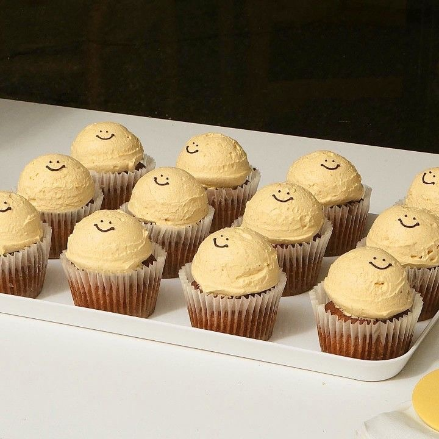

Recipe
Step-by-Step Recipe
크림치즈 필링
1. 볼에 크림치즈, 슈가파우더, 초코칩을 넣고 단단한 주걱으로 풀어준다.
2. 부드럽게 풀리면 머핀 반죽을 만들 동안 잠시 옆에 둔다.
머핀반죽
1. 볼에 달걀, 설턍, 소금, 바닐라익스트랙을 넣고 핸드믹서 중속으로 2분간 섞는다.
2. 녹인 버터와 식물성 오일을 넣고 30초간 더 섞는다.
3. 체 친 박력분과 베이킹 파우더를 넣고 주걱으로 살살 섞는다.
4. 따뜻하게 데운 우유를 넣고 살살 섞는다.
5. 작게 부순 오레오과자를 넣고 빠르게 섞는다.
마무리
1. 틀에 반죽을 60%정도 담고 그 위에 띨기잼을 8g씩 올린다.
2. 딸기잼 위에 크림치즈필링과 토핑용 오레오과자를 올린 후 170도로 예열한 오븐에서 23분간 굽는다.
3. 구운 머핀은 틀에서 제거해 식힘망에서 식힌다.
보관방법 및 주의사항
- 머핀은 구운 당일보다 밀봉하여 하루 정도 숙성 후 먹는 것을 추천합니다.
- 크림치즈가 함유되어있어 더운 날씨에는 냉장보관하는 것이 좋습니다.
- 밀봉하여 최대 3일까지 실온 및 냉장보관이 가능합니다.